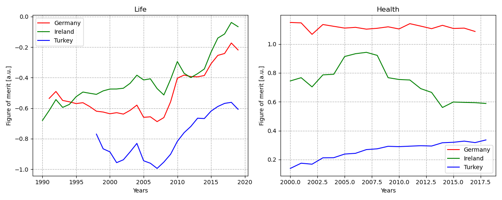

Comparing experiences to data
Looking for some ideas for a small Python project, I was digging through some datasets of GENESIS-database, run by the german federal office of statistics. When I found the international statistics, I though it would be interesting to grab some subsets, play around a little bit and see, if the numbers would match with my own experiences I had in Turkey, Ireland and Germany.
I decided to take the tables for the topics "living conditions" (containing the subjects GDP per capita, expenditures for housing and food) and "health" (containing physicians per 10,000 residents, hospital beds per 10,000 residents and stillborns per 1,000 live births) to somehow do a quantitative comparison between the countries I lived. So I did the following:
1. Get the data by using the GENESIS API
2. Data cleaning
3. Conversion to Pandas DataFrames
4. Calculating the relative values, by using the maximum values among all countries for each year. So finally, I only had values between 0 and 1 for each subject.
5. Using a simple figure of merit to combine the data for each topic.
6. Show the data obtained in two plots.
7. Examine and interpret the created graphics.
Steps 4 and 5 need some further explanation:
In step 4 I created an array, containing the maximum values for each year and subject, so I could calculate relative values for the countries of interest.
Example: The GDP per capita of Turkey in 2021 was 9830 US$ and the maximum GDP for that year was measured in Switzerland with 90360 US$. So we get a relative GDP of 0.109 for Turkey.
In step 5 I used those relative values to combine all subjects of a topic into one simple figure of merit. Depending on the subject, I added or subtracted the respective values.
fom_life = gdp_rel - food_rel - housing_rel
fom_health = physicians_rel + hospital_beds_rel - stillborns_rel
Plotting the resulting figure of merits looks like this:

Is our data close to my perspective?
The starting and ending points of the data received from GENESIS-database, in the chart vary according to each country. As we see in the chart, Turkey is at the bottom of both charts among the three countries in these years.
< Unfortunately, I think that life in Turkey continues on the same course today. I can say that this ongoing situation has a negative impact on the quality of life and standards in Turkey. Again, in the same chart, Ireland is at the top and this doesn’t surprise me at all. When I evaluate the years I lived in Ireland (2018-2020), my earnings and living standards were quite good compared to Turkey.
In the life plot the fact that Ireland seems to perform better than Germany reflects a well-known fact. If you haven't heard of it yet, I would like to point out, that after 2013 the economic crisis came to an end for Ireland and it grew by 4.8% economically in 2014 and became the fastest growing economy in the EU. It has been determined by The Economist as the country with the best quality of life in 2005. Due to the rapid growth of the country's economy between 1995 and 2007, it was known as the "Celtic Tiger”.
But when I focus on health data, Germany comes first while Turkey comes last. I personally do not think that there is such a strong difference between Germany and Turkey regarding this issue. According to my life experience in Germany after 2020, the graphic analysis results were really beyond my prediction. This isn’t the only reason: In addition, when I looked at the number of doctors, hospitals and clinics in Turkey and Ireland, the health chart result of Ireland was a surprise to me compared to my experiences there. Perhaps this difference between the data and my thoughts may be based on details such as insurance terms and the development of the health sector.
In conclusion, according to my experience, the life chart results are very close to the experiences I have gained. On the other hand, the health chart results didn’t quite fit my expectations.Nevertheless, I’m happy to share the details of my little project with you.